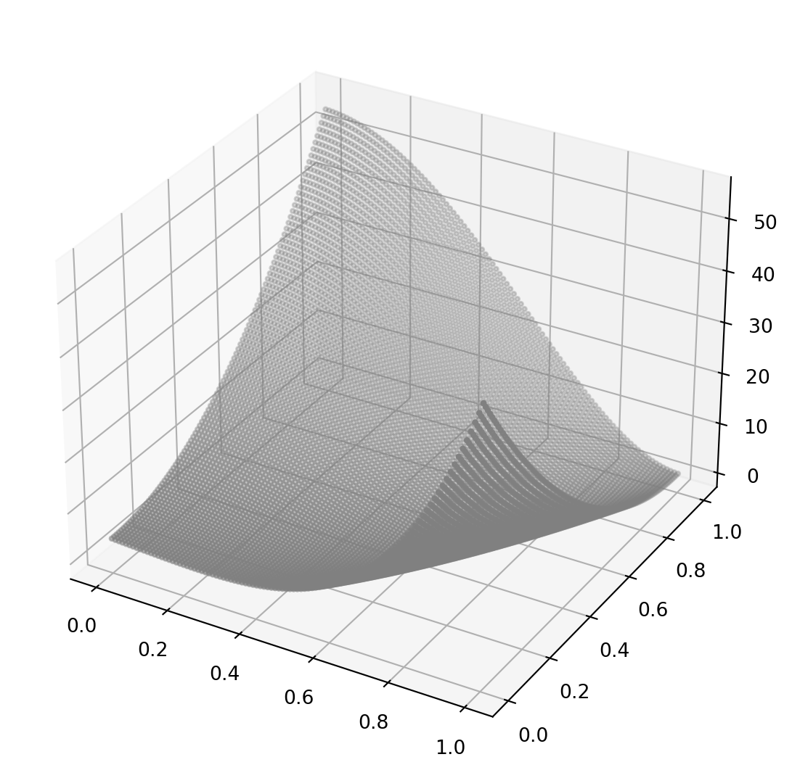
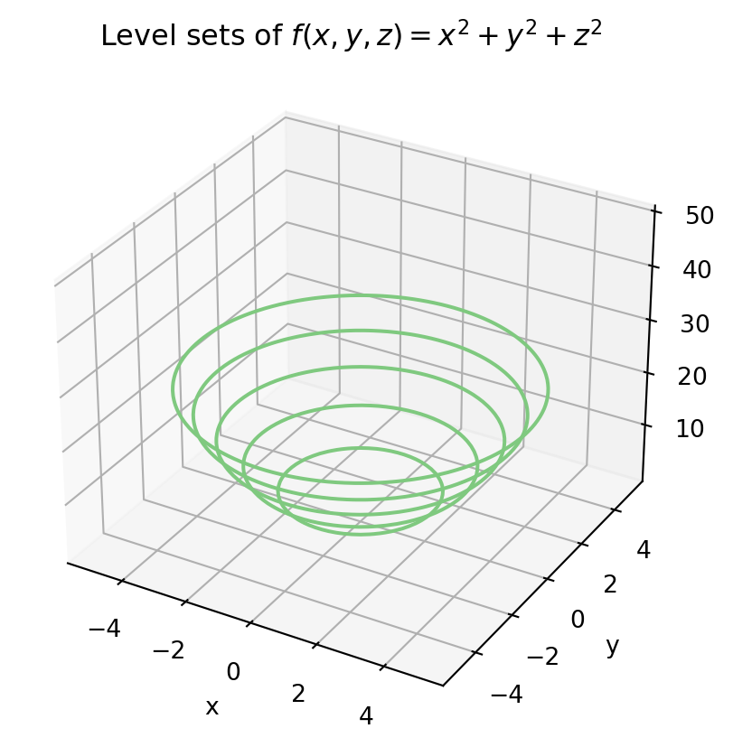

Code
import numpy as np
import matplotlib.pyplot as plt
import matplotlib as mpl
from mpl_toolkits import mplot3d
import matplotlib.font_manager as mfmtemplate
template
Kwangmin Kim
January 31, 2023
A multivariable scalar function is a mathematical function that takes multiple input variables and outputs a single scalar value. More formally, let \(f: \mathbb{R}^n \to \mathbb{R}\) be a function that maps \(n\) real-valued input variables \(\mathbf{x}=(x_1,x_2,\ldots,x_n)\) to a single real-valued output \(y=f(\mathbf{x})\). \[ y=f(\mathbf x), \space f:\mathbb R^n \rightarrow \mathbb R \]
Let \(f: \mathbb{R}^2 \to \mathbb{R}\) be a function that maps a pair of real-valued input variables \((x,y)\) to a single real-valued output \(z=f(x,y)\).
For example,
\(f(\mathbf x)=f(x_1,x_2)=x_1^2+x_2^2\), which can also be represented as \(f(\mathbf x)=||x||^2=x_1^2+x_2^2\). When \(g(\mathbf x)=g(x_1,x_2)=\sqrt{x_1^2+x_2^2}\), it is the trace of points equidistant from the origin on a plane.
Bivariable function with a quadratic form
\[ f(x_1,x_2)=2x_1^2+3x_1x_2+4x_2^2 \]
In this example, the function \(f\) takes two input variables \(x_1\) and \(x_2\), and outputs a single scalar value. The function has a quadratic form, meaning that it has terms that involve products of the input variables, with the highest order of these terms being 2. The function can also be written in matrix form as: \[ f(\mathbf x) = \begin{bmatrix}x_1 & x_2\end{bmatrix}\begin{bmatrix}2 & \frac{3}{2}\\\frac{3}{2} & 4\end{bmatrix}\begin{bmatrix}x_1 \\ x_2\end{bmatrix} \]
Here, \(\mathbf{x}=(x_1,x_2)\) is a column vector of the input variables, and the matrix \(\begin{bmatrix} 2 & \frac{3}{2} \\ \frac{3}{2} & 4 \end{bmatrix}\) encodes the quadratic form of the function.
If the quadratic form is constrained by \(y=mx\),
\[ f(x,mx)=2x^2+3mx^2+4m^2x^2=(2+3m+4m^2)x^2 \]
In this example, the function \(f\) takes two input variables \(x\) and \(mx\), constrained by the relationship \(y=mx\), and outputs a single scalar value. The function has a quadratic form, and is constrained to lie on a line with slope \(m\). Note that we can rewrite the function as:
\[ f(x,mx)=(2+3m+4m^2)x^2=a_mx^2 \]
where \(a_m = 2+3m+4m^2\) is a quadratic coefficient that depends on the slope \(m\). This shows that the function \(f\) has a family of quadratic forms, parameterized by the slope \(m\) of the line it is constrained to lie on.
# Define the function
def f(x, m):
a = 2 + 3*m + 4*m**2
return a * x**2
# Define the domain
x = np.linspace(-5, 5, 100)
# Define the slopes to visualize
slopes = [0.5, 1, 2]
# Plot the functions for each slope
for m in slopes:
y = m*x
z = f(x, m)
plt.plot(x, y, label=f"y={m}x")
plt.plot(x, z, label=f"f(x,y)={2+3*m+4*m**2:.2f}x^2")
# Set the plot properties
plt.xlabel("x")
plt.ylabel("y")
plt.legend()
plt.grid()
plt.show()fig = plt.figure(figsize=(7, 7))
ax = plt.axes(projection='3d')
x1=np.linspace(0,1,100)
x2=np.linspace(0,1,100)
x1,x2 = np.meshgrid(x1,x2) # multivariate scalar function 만들 때 사용
#print(x2) #x 축으로 값이 불변하고 y축으로는 값이 변함
y = 50*(x2 - x1**2)**2 + (2-x1)**2
#print(z)
ax.scatter3D(x1, x2, y, marker='.', color='gray')
plt.show()
A trivariable scalar function is a mathematical function that takes three input variables and outputs a single scalar value.
\[ f: \mathbb{R}^3 \to \mathbb{R} \] It is a function that maps a triple of real-valued input variables \((x,y,z)\) to a single real-valued output \(w=f(x,y,z)\).
For example,
from mpl_toolkits.mplot3d import Axes3D
# Define the function
def f(x, y, z):
return x**2 + y**2 + z**2
# Define the domain
x = np.linspace(-5, 5, 50)
y = np.linspace(-5, 5, 50)
X, Y = np.meshgrid(x, y)
Z = f(X, Y, 0)
# Plot the level sets
fig = plt.figure()
ax = fig.add_subplot(111, projection='3d')
ax.set_xlabel('x')
ax.set_ylabel('y')
ax.set_zlabel('z')
ax.set_title(r'Level sets of $f(x,y,z) = x^2 + y^2 + z^2$')
for level in np.arange(0, 26, 5):
ax.contour(X, Y, Z, [level], zdir='z', offset=level, cmap='Accent')
plt.show()
\[ f(\mathbf x) = \begin{bmatrix}x & y & z\end{bmatrix}\begin{bmatrix}2 &2.5& 3\\2.5&3&3.5\\3&3.5&4\end{bmatrix}\begin{bmatrix}x\\ y \\ z\end{bmatrix} + \begin{bmatrix}4 & 4.5 & 5\end{bmatrix}\begin{bmatrix}x\\ y \\ z\end{bmatrix}+11 \]
Here, \(\mathbf{x} = [x, y, z]^T\) is a column vector of the input variables, and the matrix \(A\) is the symmetric matrix of quadratic coefficients:
\[ \mathbf A = \begin{bmatrix}2 &2.5& 3\\2.5&3&3.5\\3&3.5&4\end{bmatrix} \]
The linear coefficients are represented by the column vector \(\mathbf{b} = [4, 4.5, 5]^T\), and the constant term is \(11\).
fig = plt.figure(figsize=(7, 7))
ax = fig.add_subplot(1, 1, 1)
ax.xaxis.set_tick_params(labelsize=18)
ax.yaxis.set_tick_params(labelsize=18)
x1 = np.linspace(-2, 2, 51)
x2 = np.linspace(-1, 3, 51)
X1, X2 = np.meshgrid(x1, x2)
Z = 50*(X2 - X1**2)**2 + (2-X1)**2
contours = ax.contour(X1, X2, Z, levels=[30, 200, 600], colors='k',
linestyles=['solid','dashed', 'dotted'])
ax.clabel(contours, contours.levels, fmt="%d", inline=True, fontsize=20)
ax.set_xlabel(r'$x_1$', fontsize=25)
ax.set_ylabel(r'$x_2$', fontsize=25)
#if file_print == True :
# fig.savefig("imgs/chap3/fig3-6.png", dpi=300, bbox_inches='tight')
# fig.savefig("imgs/chap3/fig3-6.pdf", format='pdf', bbox_inches='tight')
#
plt.show()paths200=contours.collections[0].get_paths()
paths600=contours.collections[1].get_paths()
fig = plt.figure(figsize=(7, 7))
x1 = np.linspace(-2, 2, 51)
x2 = np.linspace(-1, 3, 51)
X1, X2 = np.meshgrid(x1, x2)
Z = 50*(X2 - X1**2)**2 + (2-X1)**2
ax = plt.axes(projection='3d')
ax.xaxis.set_tick_params(labelsize=15)
ax.yaxis.set_tick_params(labelsize=15)
ax.zaxis.set_tick_params(labelsize=15)
ax.plot_surface(X1, X2, Z, cmap=plt.cm.binary, edgecolor="k")
#ax.plot_wireframe(X1, X2, Z, cmap=plt.cm.OrRd, edgecolor="k")
ax.plot3D(paths200[0].vertices[:,0], paths200[0].vertices[:,1], [200]*paths200[0].vertices.shape[0],
lw=2, color='k', linestyle='--')
ax.plot3D(paths200[1].vertices[:,0], paths200[1].vertices[:,1], [200]*paths200[1].vertices.shape[0],
lw=2, color='k', linestyle='--')
ax.plot3D(paths200[2].vertices[:,0], paths200[2].vertices[:,1], [200]*paths200[2].vertices.shape[0],
lw=2, color='k', linestyle='--')
ax.plot3D(paths600[0].vertices[:,0], paths600[0].vertices[:,1], [600]*paths600[0].vertices.shape[0],
lw=2, color='w', linestyle='-')
ax.plot3D(paths600[1].vertices[:,0], paths600[1].vertices[:,1], [600]*paths600[1].vertices.shape[0],
lw=2, color='w', linestyle='-')
ax.text(1.5, -1, 400, r"$f(x_1,x_2)=200$", color='k', fontsize=18)
ax.text(1., -1, 800, r"$f(x_1,x_2)=600$", color='k', fontsize=18)
ax.set_xlabel(r'$x_1$', fontsize=20)
ax.set_ylabel(r'$x_2$', fontsize=20)
ax.set_zlabel(r'$z$', fontsize=20)
ax.view_init(50, 80)
#if file_print == True :
# fig.savefig("imgs/chap3/fig3-5.png", dpi=300, bbox_inches='tight')
# fig.savefig("imgs/chap3/fig3-5.pdf", format='pdf', bbox_inches='tight')
#
plt.show()